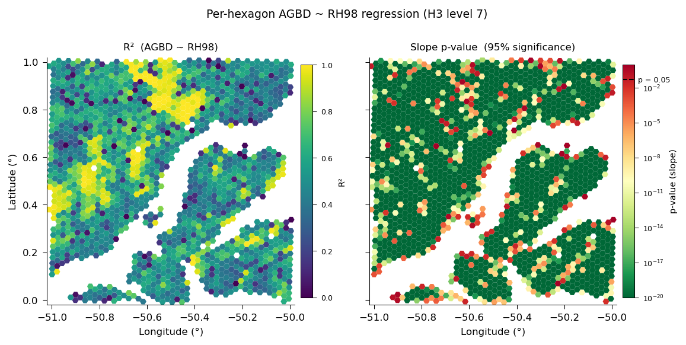

Python API#
All functionality available through the CLI is also accessible from Python — with two important advantages:
No intermediate files: Chain operations in memory without saving and reloading datasets between steps.
Custom aggregation functions: Pass Python callables to
gh3_aggregateoregi_aggregate, enabling analyses that are impossible from the CLI alone.
Core Workflow in Python#
The following mirrors the 5-step CLI Quick Start entirely in Python:
from gedih3.daac import gedi_download
import gedih3.gh3driver as gh3
from gedih3 import raster
# Step 1: Download GEDI data
gedi_download(
product_vars={'L2A': ['minimal'], 'L4A': ['minimal']},
spatial=[-51, 0, -50, 1], # [W, S, E, N]
temporal=('2020-01-01', '2022-12-31'),
resume=True,
)
# Step 2: Build the H3 database
from gedih3 import build_h3db
build_h3db(
product_vars={'L2A': ['minimal'], 'L4A': ['minimal']},
spatial=[-51, 0, -50, 1],
)
# Step 3: Load and filter data
ddf = gh3.gh3_load(
source='~/gedi_data/h3/',
columns=['agbd_l4a', 'rh_098_l2a'],
region=[-51, 0, -50, 1],
query='quality_flag_l2a == 1 and agbd_l4a > 0',
)
# Step 4: Aggregate to H3 level 6 (~36 km²)
agg_df = gh3.gh3_aggregate(ddf, target_res=6, agg='mean')
gdf = agg_df.compute() # collect results
# Step 5: Export as GeoTIFF
xras = raster.h3_to_raster(gdf)
raster.export_raster(xras, 'agbd_mean.tif', compress='LZW')
Custom Aggregation Functions#
This is the most powerful feature of the Python API. gh3_aggregate accepts any callable that takes a pandas DataFrame (one H3 partition’s worth of data) and returns a DataFrame with results. This enables analyses such as statistical modeling or custom metrics — computed independently per hexagon across all Dask partitions.
Example: Linear Regression Per Hexagon#
import numpy as np
import pandas as pd
from scipy.stats import linregress
import gedih3.gh3driver as gh3
def fit_height_biomass(df):
"""Fit AGBD ~ RH98 linear regression per hexagon with slope significance."""
x = df['rh_098_l2a'].values
y = df['agbd_l4a'].values
if len(x) < 5:
return pd.DataFrame({'r2': [np.nan], 'pvalue': [np.nan], 'coef': [np.nan], 'n': [0]})
res = linregress(x, y)
return pd.DataFrame({
'r2': [res.rvalue ** 2],
'pvalue': [res.pvalue],
'coef': [res.slope],
'n': [len(x)],
})
ddf = gh3.gh3_load(
source='~/gedi_data/h3/',
columns=['agbd_l4a', 'rh_098_l2a'],
region=[-51, 0, -50, 1],
query='quality_flag_l2a == 1 and l4_quality_flag_l4a == 1 and agbd_l4a > 0',
)
# Each hexagon gets its own regression — Dask processes all partitions in parallel
results = gh3.gh3_aggregate(ddf, target_res=7, agg=fit_height_biomass)
results_df = results.compute()

Per-hexagon AGBD ~ RH98 regression at H3 level 7. Left: R² values. Right: slope p-value on a log scale (dashed line = 0.05 threshold). Hexagons with fewer than 5 quality shots or R² <= 0 are excluded.#
The callable receives a pandas DataFrame with all shots in one Dask partition. The return value must be a DataFrame with one row per group — in this case, one row per H3 hexagon after aggregating.
Loading Datasets#
From the H3 Database#
import gedih3.gh3driver as gh3
import geopandas as gpd
polygon = gpd.read_file('my_region.shp')
# Load with spatial and temporal filters
ddf = gh3.gh3_load(
source='/path/to/h3_database/',
columns=['agbd_l4a', 'rh_098_l2a'],
region=polygon, # shapefile or bbox [W,S,E,N]
query='quality_flag_l2a == 1', # pandas-style filter string
)
Tip
The database can also live on a remote filesystem. Use configure_storage() to set credentials, then pass a remote URI to source=:
from gedih3.utils import configure_storage
configure_storage('s3', anon=True) # public bucket
ddf = gh3.gh3_load(source='s3://my-bucket/h3_database/', columns=['agbd_l4a'])
configure_storage('sftp', username='user', key_filename='~/.ssh/id_rsa')
ddf = gh3.gh3_load(source='sftp://server.example.com/data/h3/')
Supported protocols: s3, http, https, ftp, sftp/ssh. See the CLI credential flags for the equivalent command-line options.
From a Simplified Dataset (gh3_extract / gh3_aggregate output)#
# Load as Dask DataFrame (lazy, for large datasets)
ddf = gh3.gh3_load(source='/path/to/extracted/')
# Collect into memory
gdf = gh3.gh3_load(source='/path/to/extracted/').compute()
Selecting partition files directly#
If you read the H3 partition files yourself instead of going through gh3_load, do not pick partitions by intersecting the H3 cell polygons with your region — H3 partitions are not geometrically inclusive of the shots stored in them, so an exact intersection silently drops boundary shots (see the Parent/Child Nesting Caveat).
Use gh3_select_partitions, which applies the same overhang-safe ring-1 expansion that gh3_load uses internally and returns the correct minimal set of partition cell IDs:
import gedih3, glob
# Overhang-safe partition selection (ring-1 expansion applied)
ids = gedih3.gh3_select_partitions(source='/path/to/h3_database/', region='roi.shp')
files = [f for i in ids
for f in glob.glob(f'/path/to/h3_database/h3_03={i}/year=*/*.parquet')]
Each partition’s *.metadata.json sidecar (and the parquet GeoParquet footer) also carries an overhang-padded bbox that is safe to intersect against; its h3_geometry is the exact cell polygon and is not. Compute a padded extent for any cell ID with gedih3.h3_partition_bbox(cell_id, partition_level).
Aggregation#
Built-in Functions#
Any way of passing functions compatible with pandas.DataFrame.groupby is accepted.
# Single function
agg = gh3.gh3_aggregate(ddf, target_res=6, agg='mean')
# Multiple functions at once
agg = gh3.gh3_aggregate(ddf, target_res=6, agg=['mean', 'std', 'count'])
Some available built-in function include: mean, sum, median, std, count, min, max.
Custom Callable#
# Any function: DataFrame → DataFrame (one row per group)
agg = gh3.gh3_aggregate(ddf, target_res=6, agg=my_custom_function)
Rasterization#
from gedih3 import raster
# H3 hexagon GeoDataFrame → xarray Dataset
gdf = gh3.gh3_aggregate(ddf, target_res=6, agg='mean').compute()
xras = raster.h3_to_raster(gdf, columns=['agbd_l4a_mean'])
# Export to GeoTIFF
raster.export_raster(xras, 'agbd.tif', compress='LZW')
# Visualize in-memory
xras['agbd_l4a_mean'].plot()
Time-Series Rasterization#
from gedih3.raster import TimeSeriesRasterizer
ts = TimeSeriesRasterizer(gdf, time_col='datetime', target_level=6)
for xras, suffix in ts.generate('2020-01-01', '2023-01-01', 1, 'years'):
raster.export_raster(xras, f'agbd_{suffix}.tif')
Ancillary Data Integration#
Sample a Raster at GEDI Shot Locations#
import geopandas as gpd
from gedih3.imgutils import from_image
# region must be a GeoDataFrame or bbox, not a file path
region = gpd.read_file('region.shp')
# Sample DEM elevation at each GEDI shot location
ddf = from_image(
image_path='/path/to/dem.tif',
data_source='/path/to/h3_database/',
region=region,
band_names=['elevation'],
)
Join Polygon Attributes to GEDI Shots#
import gedih3.gh3driver as gh3
from gedih3.vecutils import join_polygons_to_points
# Load data with geometry (required for spatial join)
ddf = gh3.gh3_load(source='/path/to/h3_database/', columns=['geometry'])
# join_polygons_to_points is partition-level, so use map_partitions
result = ddf.map_partitions(
join_polygons_to_points,
vector_path='ecoregions.shp',
join_columns=['ECO_NAME', 'BIOME_NAME'],
prefix='eco_',
)
Exporting Data#
# Export to flat Parquet — preserves shot_number and spatial indexes by default
gh3.gh3_export(ddf, output='path/to/output/')
# Drop spatial index columns (h3_XX, egiXX, shot_number) for external consumers
gh3.gh3_export(ddf, output='path/to/output/', drop_internal=True)
The exported dataset is compatible with gh3_rasterize, gh3_from_img, gh3_from_polygon, and any tool that reads Parquet (pandas, R, QGIS, DuckDB).
Dask Client Configuration#
For large datasets, configure the Dask distributed client directly:
from dask.distributed import Client
client = Client(n_workers=8, threads_per_worker=1, memory_limit='8GB')
# All gh3 operations automatically use this client
ddf = gh3.gh3_load(source='~/gedi_data/h3/', columns=['agbd_l4a'])
agg = gh3.gh3_aggregate(ddf, target_res=6, agg='mean').compute()
client.close()